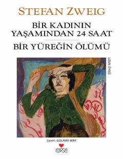

BKBir ayol hayotidagi eng taqdirli yigirma to'rt soatlik voqealar bayoni.
Kitob Avstriya yozuvchisi Stefan Sveyg qalamiga mansub bo'lib, inson psixologiyasi va hayotiy burilishlar haqida hikoya qiladi. Asar bir ayning taqdirini o'zgartirib yuborgan yigirma to'rt soatlik kechinmalari va chuqur hissiy tahliliga bag'ishlangan.